Blank walls make even a tidy room feel unfinished, but decorating them does not require new furniture or a big spend. Most of the ideas in this list use things you may already have — spare frames, leftover yarn and paint, charity-shop finds, plants, photos and fabric — turned into wall decor with a little time rather than money.
There are 30 ideas below, each with a photo to show the look. Some take ten minutes and no tools at all, which makes them safe for renters; others are relaxed weekend projects. Pick one wall, start with the idea that uses what you already own, and stop whenever the room feels finished — one well-chosen piece is worth more than a wall full of filler.
1. Gallery Wall with Secondhand Frames
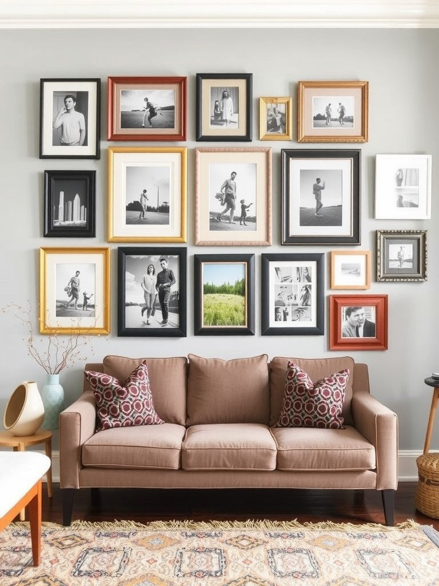
A gallery wall is the classic budget wall upgrade because the frames can come from charity shops, flea markets or your own cupboards — they do not need to match. Fill them with family photos, postcards, calendar pages or simple prints, then lay the whole arrangement out on the floor before hanging anything. Keep the centre of the group around eye level and the gaps roughly even, and it will look deliberate rather than random. It works best on the wall above a sofa, a bed or along a staircase.
2. Macrame Wall Hanging
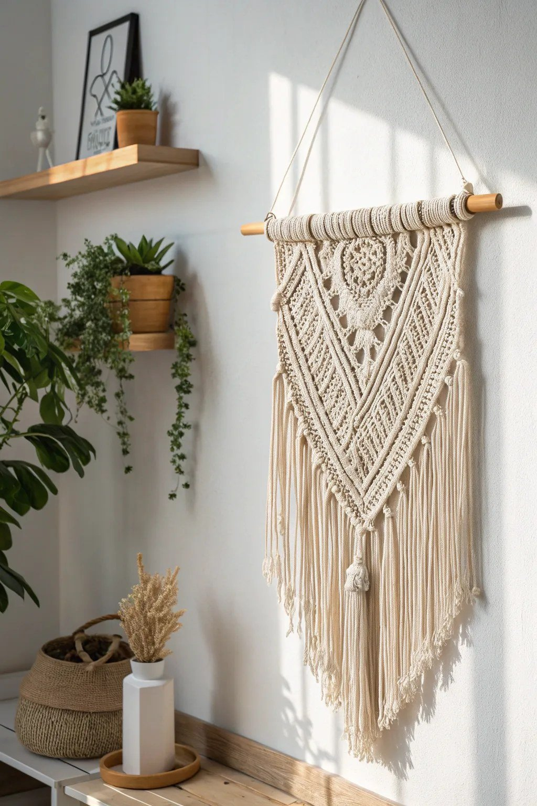
A macrame hanging adds soft texture to a plain wall using nothing more than cotton cord and a wooden dowel or a smooth fallen branch. The whole piece is built from a few basic knots repeated in rows, so it is a realistic first project even if you have never knotted before. Neutral cord suits almost any room, and the finished hanging is light enough for a single hook. Try it above a bed, a sofa or in an entryway where hard surfaces need softening.
3. Washi Tape Photo Frames
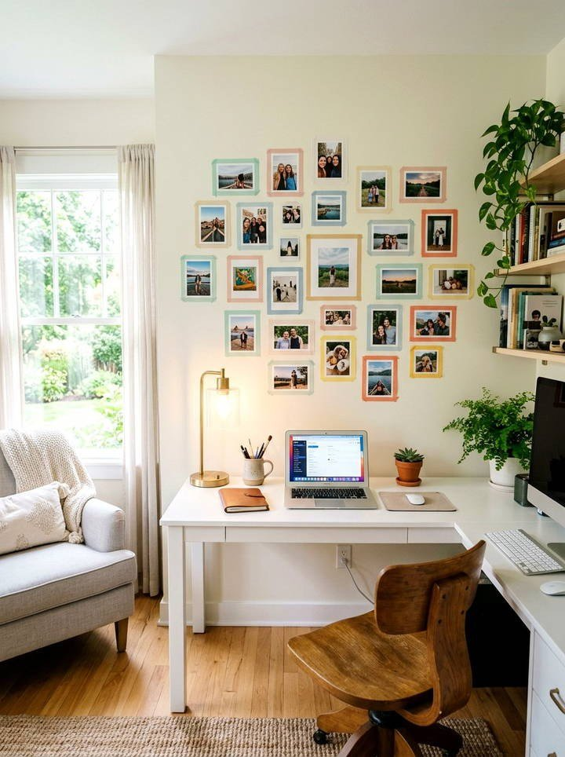
Washi tape lets you 'frame' photos and prints directly on the wall with strips of patterned tape — no nails, no holes and nothing permanent. Cut four strips per picture, press them along the edges as a border, and group several taped pictures into a loose gallery. Because the tape peels away cleanly, this is one of the best options for renters and for rooms you rearrange often. It suits a desk wall, a teenager's bedroom or a study corner.
4. Woven Basket Wall
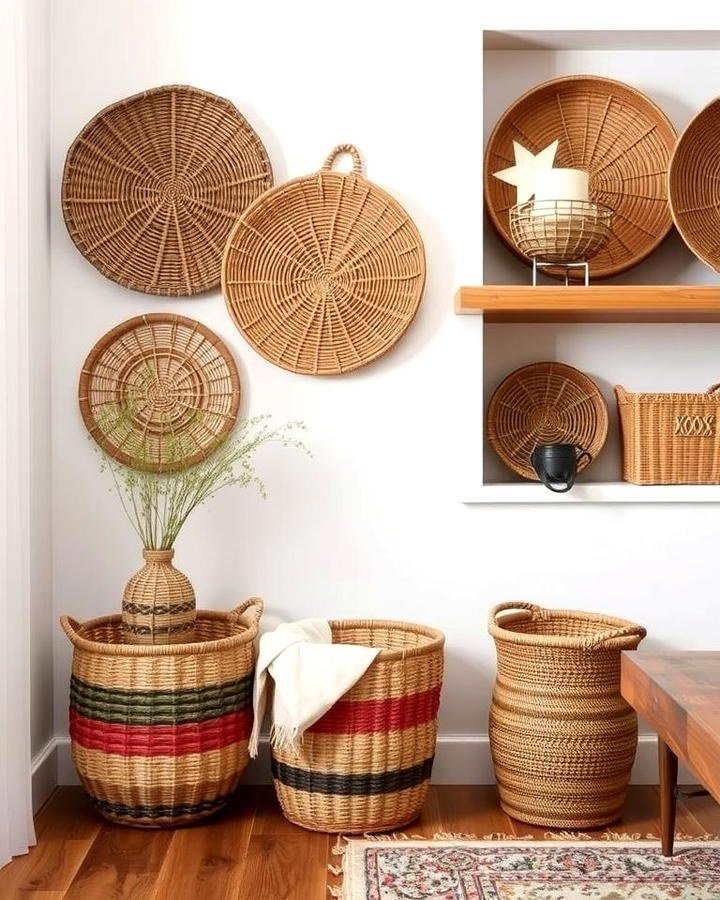
Shallow woven baskets and trays make surprisingly good wall art: they are light, textured and easy to find secondhand. Arrange an odd number in a loose cluster, mixing sizes and weave patterns, and hang each one from a small nail or hook through its rim. Start with the largest basket in the middle and build outwards, stepping back often to check the balance. A basket wall suits living rooms, entryways and anywhere that needs a warm, natural focal point.
5. Botanical Print Grid
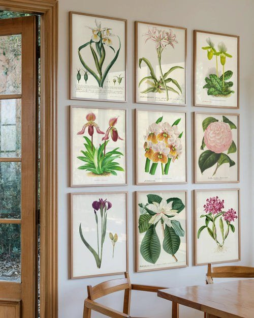
A neat grid of botanical prints looks calm and considered, and it is cheap to put together with printable artwork, pages from an old nature book or a calendar. Use identical frames in two or three rows and measure the spacing carefully — the even gaps are what make the grid feel expensive. Flower, fern and herb illustrations all work, and the set can grow one frame at a time. Dining rooms, hallways and bathrooms take this orderly style especially well.
6. Paint Your Own Abstract Canvas
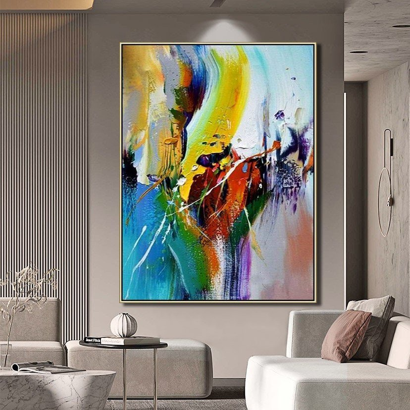
A big blank canvas and a few tubes of acrylic paint in colours already in your room are all you need for a statement piece. Work in broad strokes with a wide brush, sponge or palette knife, layering two or three colours plus white so the painting stays tied to the room's palette. There is no wrong result with abstract work — if an area bothers you, paint over it when it dries. One large canvas above a sofa has more impact than several small pictures.
7. Decorative Plate Wall
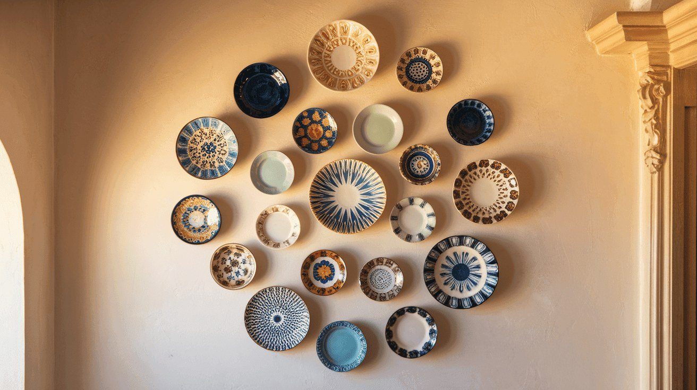
Pretty plates are too good to hide in a cupboard: fitted with simple plate hangers or adhesive discs, they become a wall display full of pattern and colour. Mix charity-shop finds, odd pieces from a set and one or two plain plates to rest the eye, and arrange them on the floor first in a loose circle or cloud shape. Stick to a shared colour family so the mix feels collected rather than cluttered. Plate walls belong naturally in dining rooms and kitchens, but work above a sideboard anywhere.
8. Straw Hat Wall Display
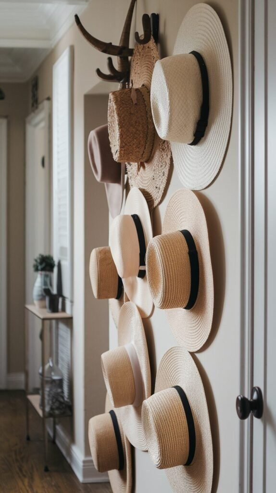
If you own straw hats, they can decorate the wall and solve their own storage at the same time. Hang them on hooks or pegs in a vertical column or a relaxed cluster, spacing them so the brims just overlap. The woven texture and warm tones read as intentional decor, especially in a hallway or beside a door. Choose hats with a similar feel — all straw, or all light-coloured — so the display looks like a collection.
9. Floating Shelves as a Changing Display
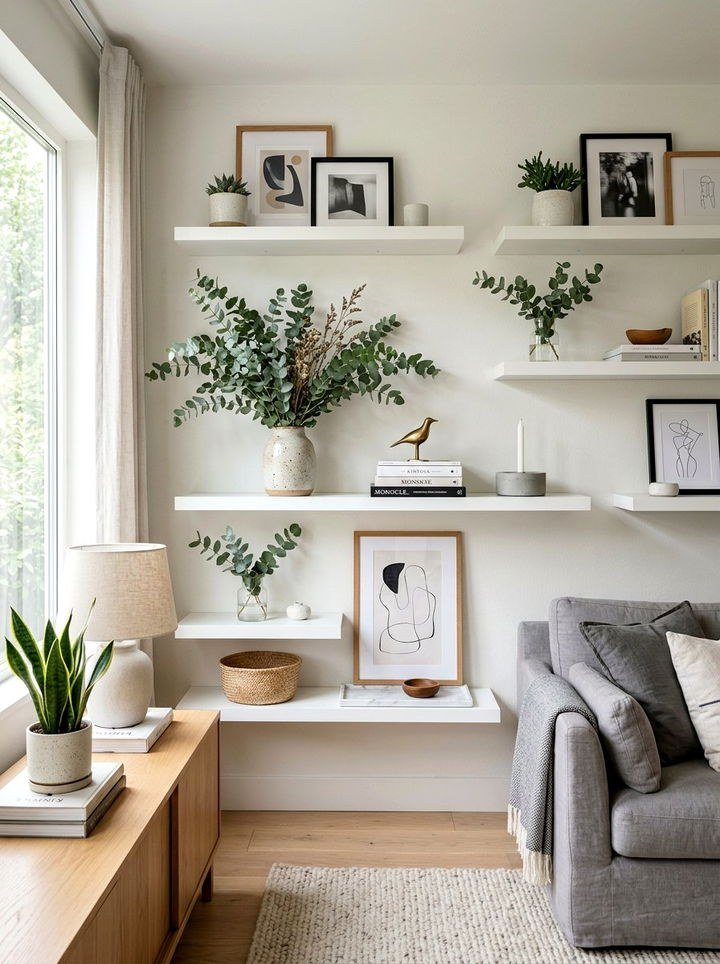
Two or three floating shelves turn a blank stretch of wall into a display you can restyle whenever you like. Lean small framed prints against the wall, add a trailing plant, a stack of books and one or two vases, and leave some empty space so it does not read as storage. Because nothing is fixed except the shelves themselves, the look can change with the seasons at no cost. This works well in living rooms, above a desk or in a wide hallway.
10. Framed Wallpaper Panels
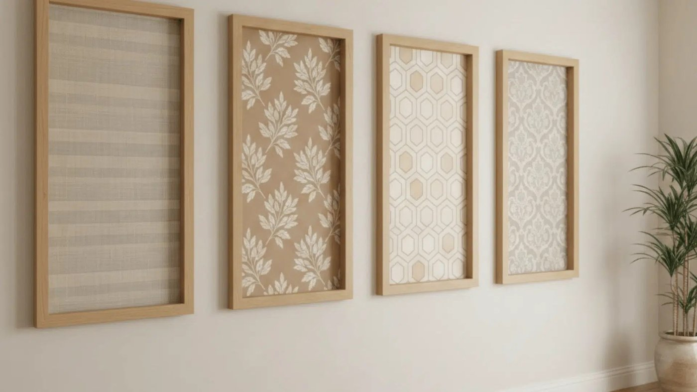
A leftover roll of wallpaper, a remnant or even a single sample piece can become elegant wall panels when it is framed. Cut the paper to fit tall frames, or fix it inside simple wooden battens, and hang two to four panels in a row for a tailored, architectural look. It gives you pattern on the wall without papering a whole room, and framed panels can come with you when you move. Hallways, dining rooms and the wall behind a bed are all good candidates.
11. Photo String with Fairy Lights
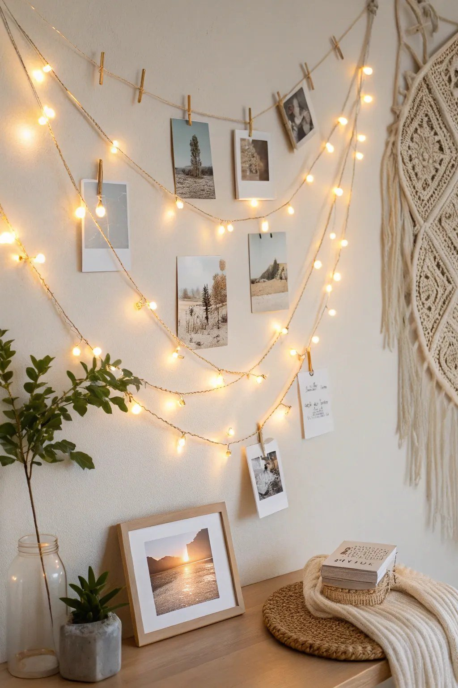
A length of twine or a string of warm fairy lights, plus a handful of mini wooden pegs, makes a glowing photo display in minutes. Drape the string in gentle swags between two hooks, clip on photos, postcards and small notes, and let the light do the decorating after dark. Battery-powered lights avoid trailing cables and make this easy in rented rooms. It is a natural fit above a bed, a desk or a reading chair.
12. Yarn Tassel Hanging on a Branch
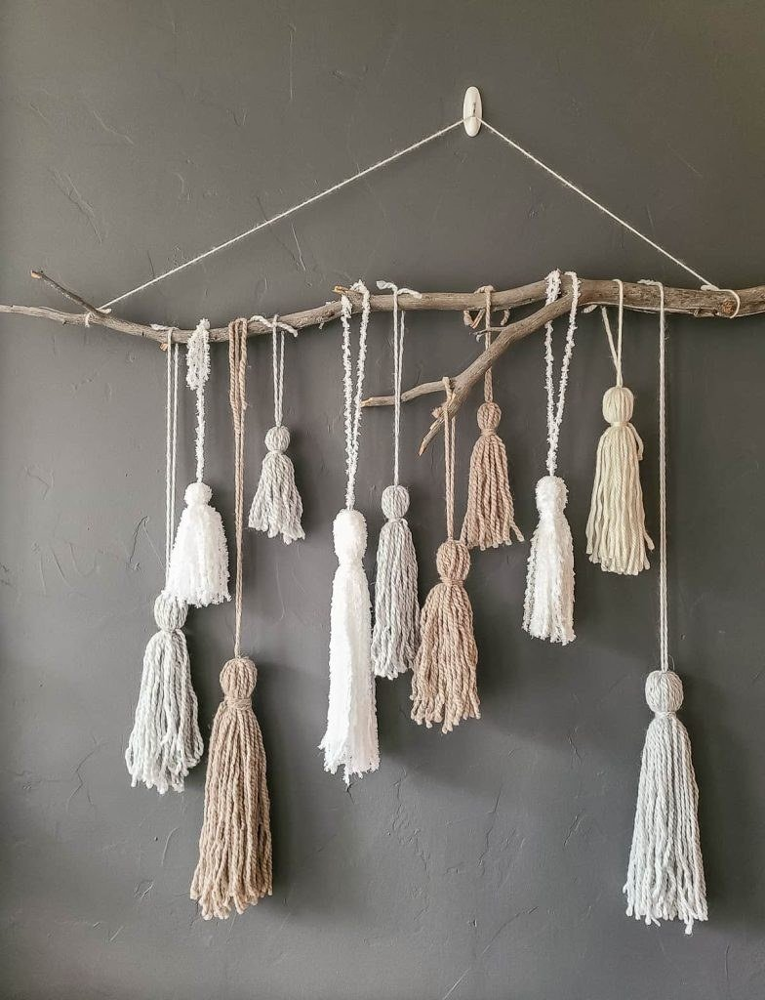
Leftover yarn becomes a soft, boho wall hanging when it is made into tassels and tied along a branch or dowel at different lengths. Wrap yarn around a book or card to keep tassels even, tie off the head of each one, and trim the ends straight. A single colour family — creams, beiges and soft greys — keeps it calm; mixed colours suit a child's room. Hang it from one hook by a loop of string, above a sofa, cot or desk.
13. Pressed Flowers in a Glass Frame
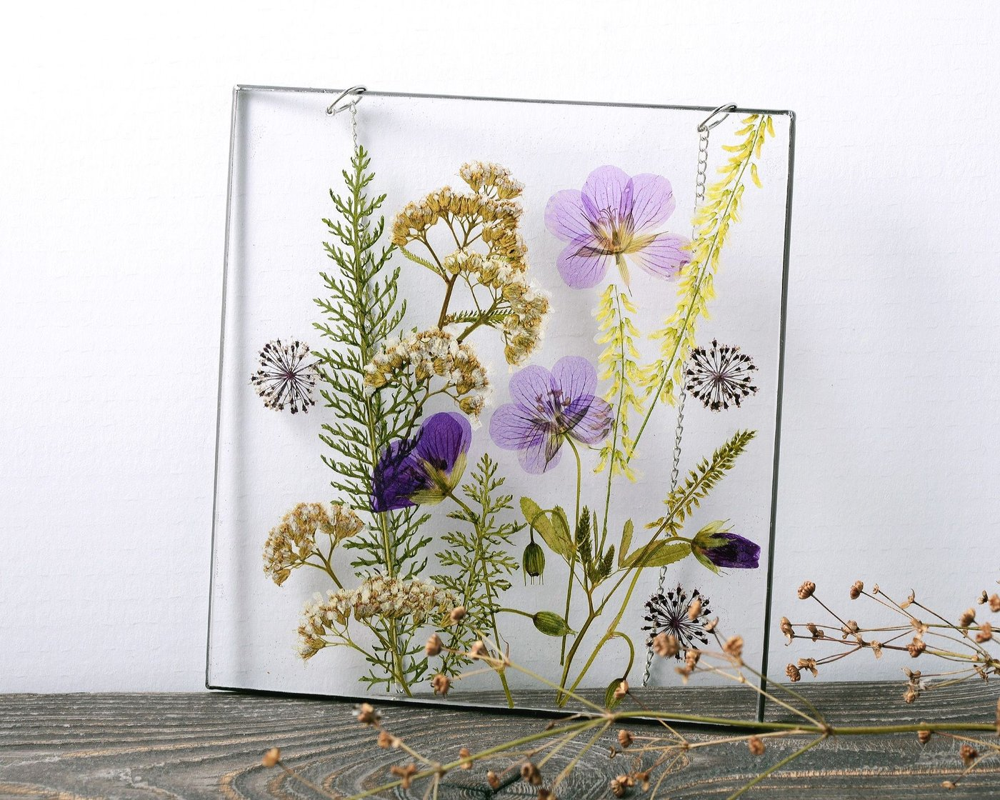
Flowers and leaves pressed flat in a heavy book keep their colour surprisingly well and look delicate between the glass of a floating frame. Arrange a small composition — one larger bloom, a fern frond, a few tiny flowers — and let the clear glass and wall colour become the background. Hang the frame where light passes near it, such as beside a window, but out of harsh direct sun to slow fading. A pair or trio of small frames makes a gentle display for a bedroom or bathroom.
14. Rope-Wrapped Mirror Frame
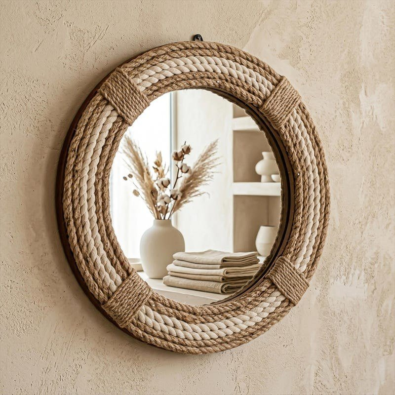
A plain round mirror gains a coastal, handmade feel when its frame is wrapped or edged with natural rope. Glue jute or cotton rope in tight coils around a flat frame, or around the mirror's edge itself, finishing the joins at the bottom where they will not be noticed. As well as decorating the wall, a mirror bounces daylight into the room and makes the space feel larger. Try it in a hallway, bathroom or above a console table.
15. Woven Tapestry Above the Bed
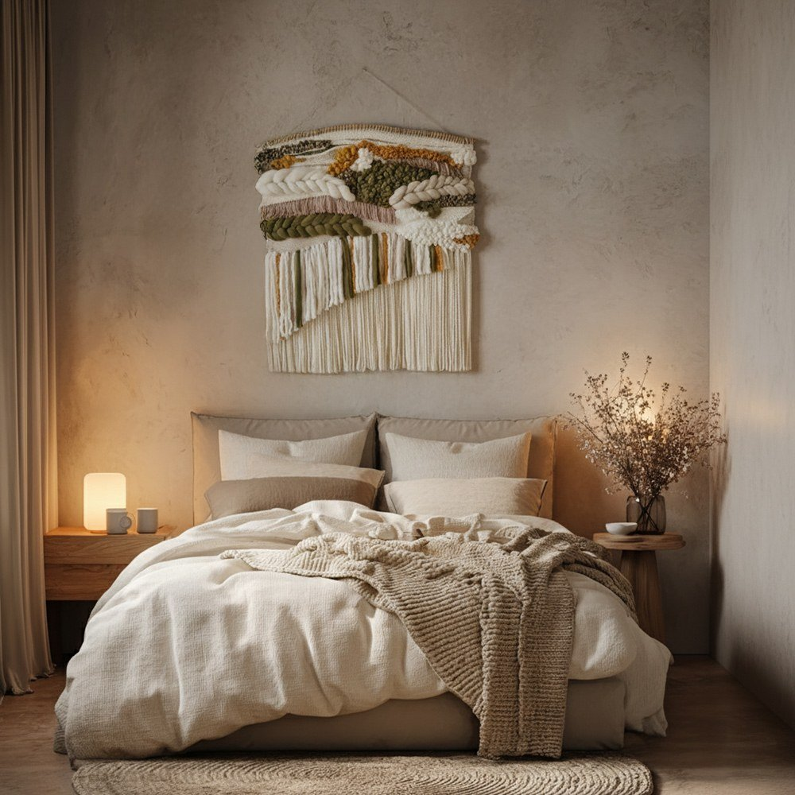
A woven wall hanging or tapestry hung on a simple rod makes a soft alternative to a headboard and warms up the wall behind a bed. The chunkier weaves — with braided rows, mixed yarns and a fringe — add the most texture, and you can weave a simple version on a cardboard or frame loom with leftover yarn. Keep the colours close to your bedding so the wall and bed read as one calm arrangement. It also works above a sofa in a living room that needs softness.
16. Oversized Paper Flowers
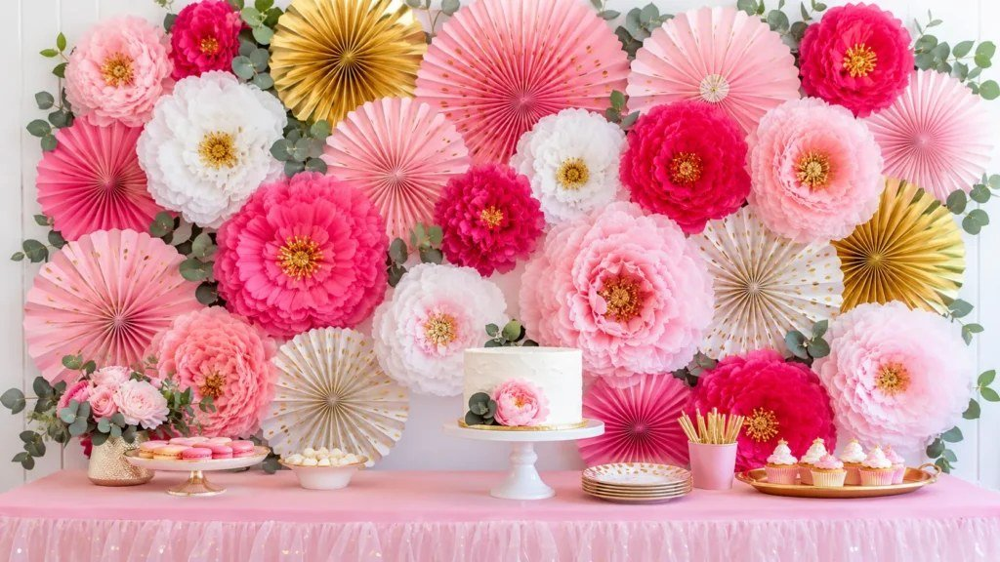
Giant flowers made from cardstock or tissue paper cost very little per bloom and cover a lot of wall. Layer petals in two or three sizes, curl the edges for shape, and cluster the finished flowers with paper fans or leaves, fixing them with removable tape or pins. The effect is made for celebrations, nurseries and photo backdrops, and the flowers store flat afterwards. In softer colours, a smaller cluster also works as everyday decor above a child's bed or desk.
17. Framed Chalkboard
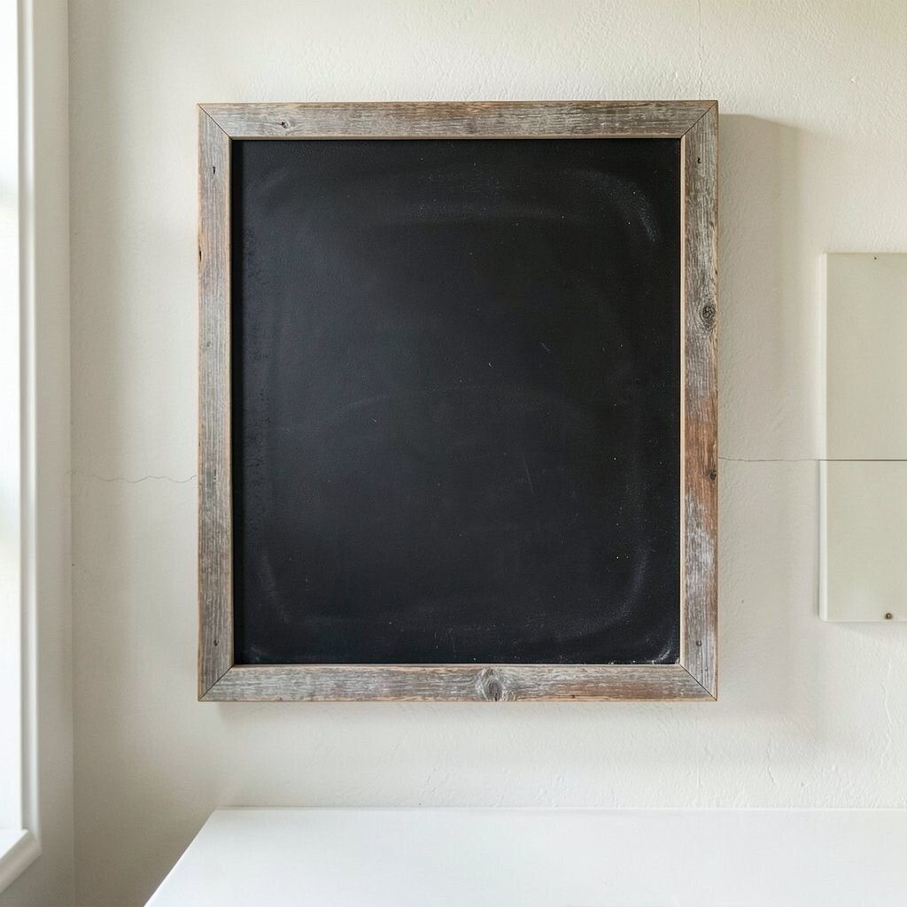
An old picture frame plus a board painted with chalkboard paint becomes a changeable piece of wall decor: menus, quotes, doodles and lists all count as art when they are framed. Fit the painted board into the frame, hang it, and keep chalk or a chalk pen nearby so updating it takes seconds. A rustic wood frame suits kitchens and hallways; a painted frame can match a child's room. It is practical decor — the wall earns its keep and still looks finished.
18. Embroidery Hoop Wall Art
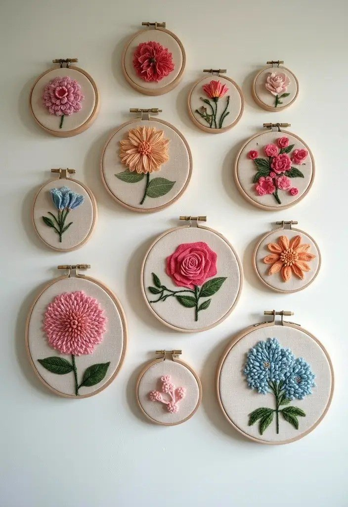
Embroidery hoops are ready-made round frames: stretch fabric, a stitched motif or even a pretty tea towel inside, trim the back, and hang. Group hoops of different sizes in a loose cluster, keeping one colour or theme — such as flowers — running through them so the collection holds together. Plain fabric hoops in linen and cotton look good even without any stitching. This suits craft rooms, bedrooms and any wall that needs a soft, handmade touch.
19. Painted Colour-Block Arch
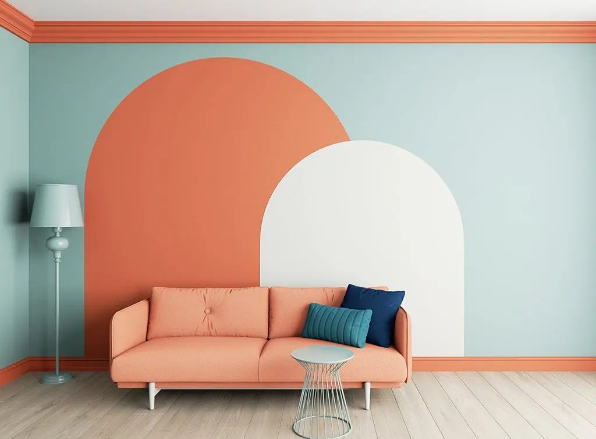
Sometimes the decor is paint itself: a large arch painted on the wall frames a sofa, bed or desk and gives a plain room instant architecture. Mark the shape with pencil and string or a flexible curve, edge it with painter's tape, and use leftover paint or a sample pot in a colour that echoes your cushions or rug. One arch is a statement; two overlapping arches in toning colours are bolder. Because it is only paint, it is also one of the cheapest ways to change a room's whole feel.
20. Hanging Plant Wall
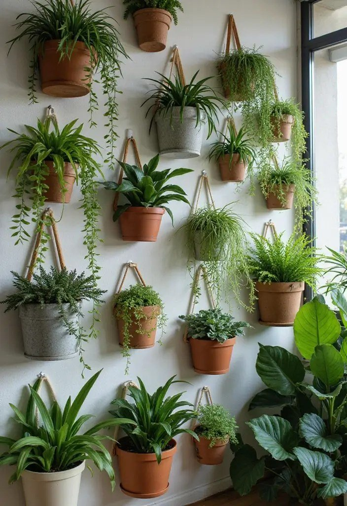
A group of hanging planters turns a bright wall into a living display and frees every surface below it. Use simple wall hooks with hanging pots, macrame hangers or small wall-mounted holders, and mix trailing plants with upright ones at staggered heights. Keep the pots in one family — terracotta, white or metal — so the greenery stays the star. Place the wall near a window, group plants with similar light needs, and choose a spot where watering will not drip onto furniture.
21. Salvaged Window Frame Decor
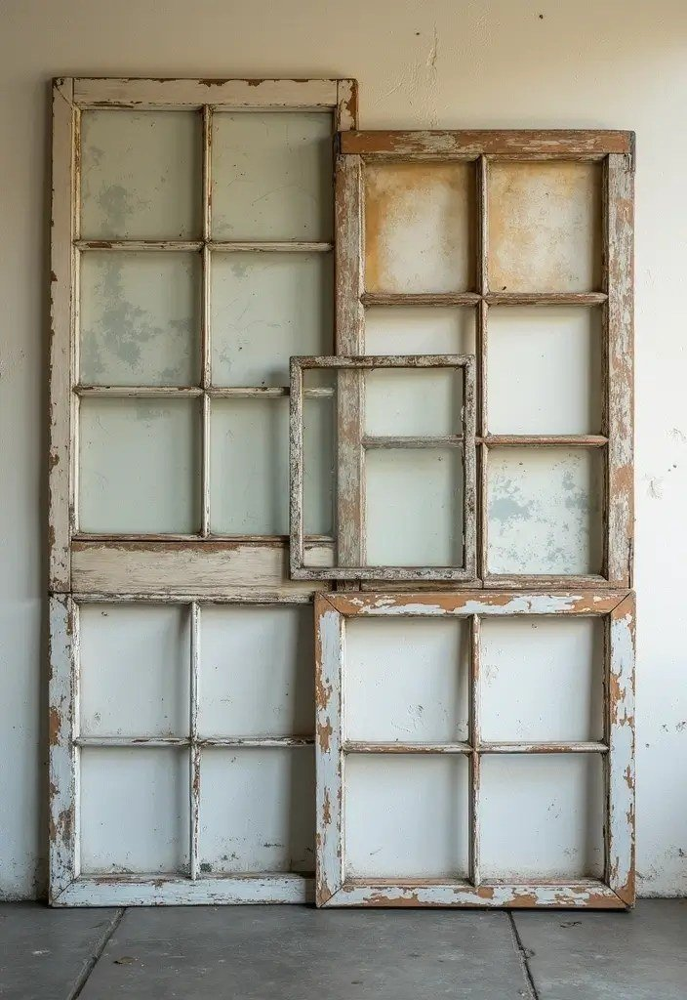
An old window frame, cleaned up and left with its worn paint, brings instant farmhouse character to a wall. Hang it as it is, back the panes with photos or pressed leaves, or hang a small wreath over the centre for a layered look. Leaning a large frame on a mantel or console is the no-drill version and works well for renters. Look for frames at salvage yards, markets and skips being cleared — one frame is a feature; two matching frames make a pair.
22. Framed Vintage-Style Map
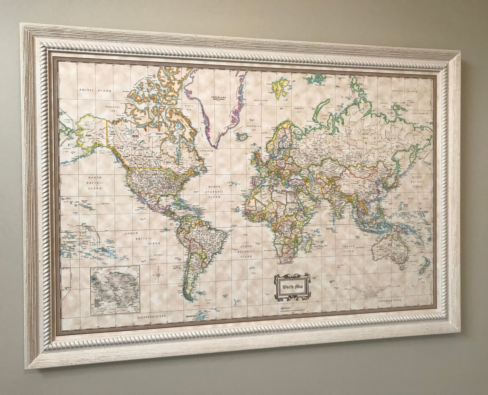
A map is a lot of detailed artwork for the price of a poster, and framed large it can carry a whole wall on its own. Choose a vintage-style world map, an atlas page enlarged, or a map of a place that matters to you, and give it a proper frame so it reads as art rather than a classroom aid. Maps suit living rooms, studies and children's rooms, and pair well with wood, leather and plants. Add small framed postcards or travel photos nearby to build a gentle travel corner.
23. Wooden Peg Rail
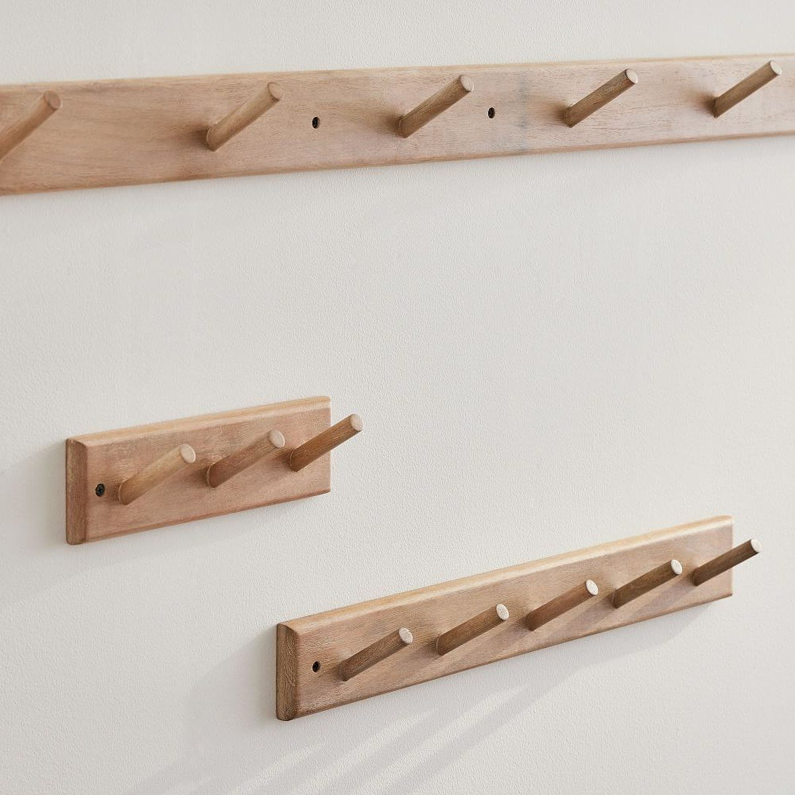
A peg rail — a length of board with angled dowel pegs — is part storage, part wall decor, and simple to build with basic tools. Along it you can hang hats, baskets, small framed prints, hanging plants and bags, and the arrangement can change as often as the seasons. Painted to match the wall it looks built-in; left as natural wood it adds warmth to hallways and kitchens. Fix it securely into studs or with proper wall plugs, since a loaded rail carries real weight.
24. Oversized Statement Clock
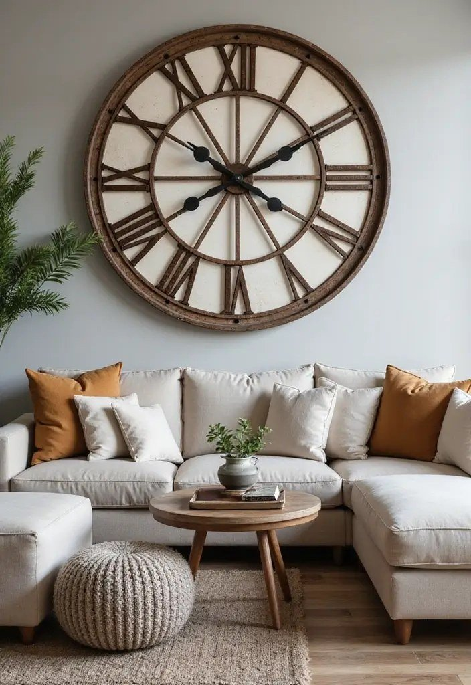
One oversized clock can do the job of a whole gallery wall: it fills the space, adds texture and is genuinely useful. Large clock faces are straightforward to make from a board or table top with a simple clock mechanism kit, or to find secondhand and repaint. Rustic wood and Roman numerals suit farmhouse styles; plain numbers and a painted rim suit modern rooms. Hang it centred above a sofa or mantel, and let it be the only thing on that wall.
25. Clipboard Gallery Wall
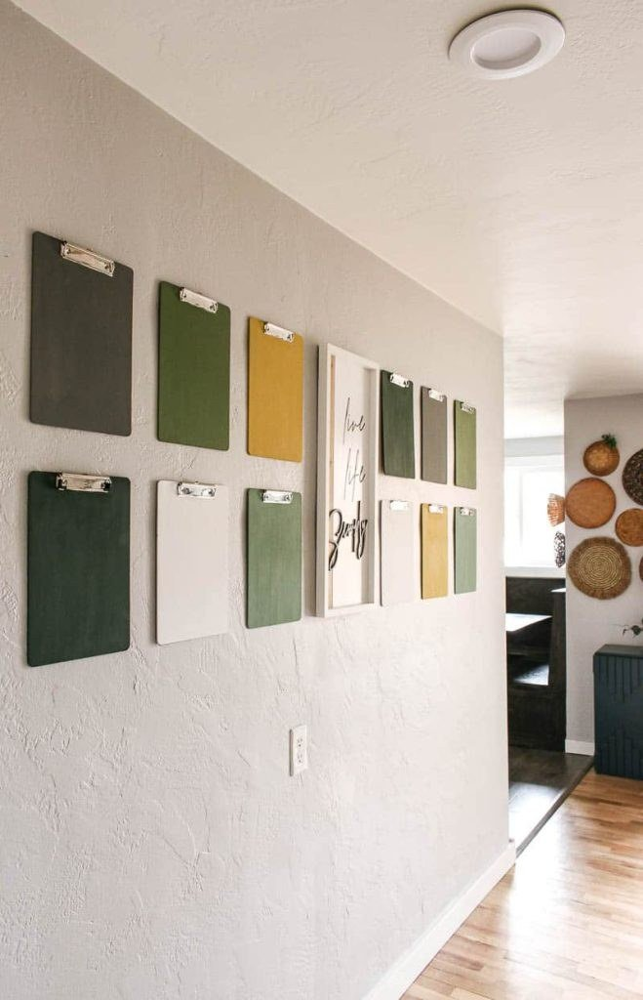
Clipboards are frames you can update in seconds: clip in a print, a photo, a child's drawing or a favourite quote, and swap it whenever you like. Paint the boards in colours from your room, hang them in a neat grid with even spacing, and mix one larger framed piece into the middle if you have one. Because nothing is behind glass, textures like fabric swatches and pressed leaves work too. Hallways, home offices and children's rooms benefit most from this ever-changing display.
26. Stencilled Accent Wall
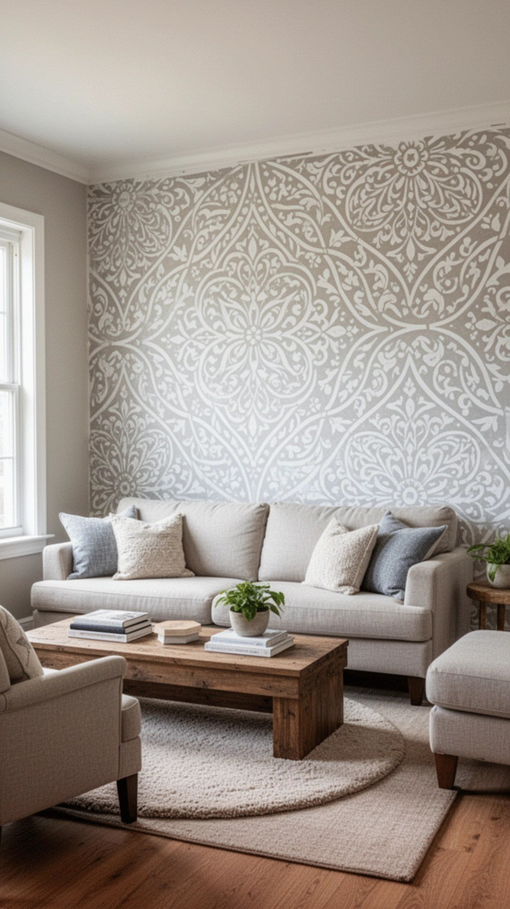
A repeating stencil and a pot of paint give one wall the richness of wallpaper at a fraction of the commitment. Work in rows with a foam roller and very little paint on it — a light touch is what keeps the edges crisp — and let a tone-on-tone palette (white over grey, cream over beige) keep it elegant. Damask and tile patterns suit living rooms; simple geometrics suit modern spaces. If you tire of it, it is one coat of paint to change, which makes it a brave but safe experiment.
27. Greenery Wreath for Indoors
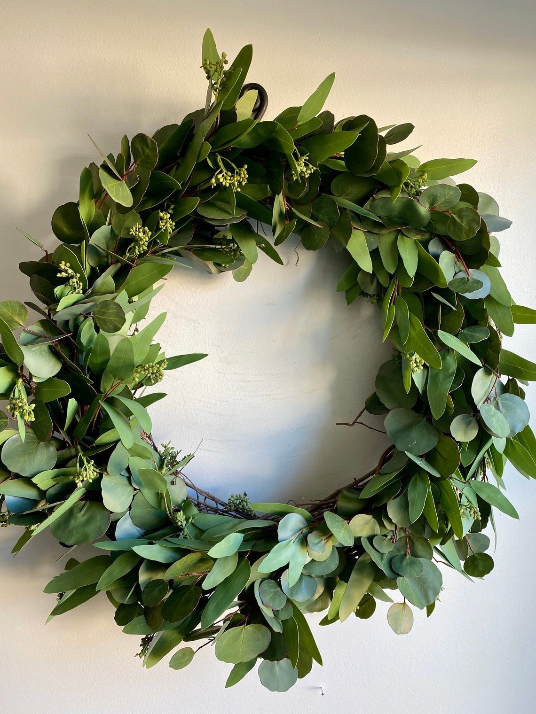
A wreath is not just for the front door at Christmas: a full ring of eucalyptus or mixed foliage looks fresh on an indoor wall all year round. Wire real or good faux stems onto a grapevine or metal hoop base, keeping the leaves facing outward and filling gaps as you go. Hang it on a wall, over a mirror or above a mantel, where its round shape softens all the straight lines around it. On its own it is enough for a small wall or a space between two windows.
28. Blanket Ladder Against the Wall
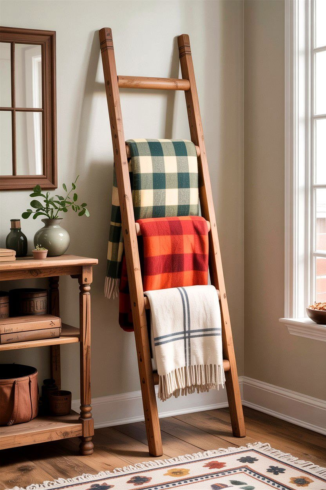
A simple wooden ladder leaned against the wall displays throws and quilts like textiles in a shop — and keeps them off the sofa arms. Build one from straight timber lengths and dowel rungs, or look for a secondhand ladder and sand it smooth. Choose blankets with pattern and texture — plaids, stripes and a fringe — since they are the actual decoration here. It fills a tall, narrow gap in a living room or bedroom corner without a single screw, which renters will appreciate.
29. Framed Fabric and Textile Art
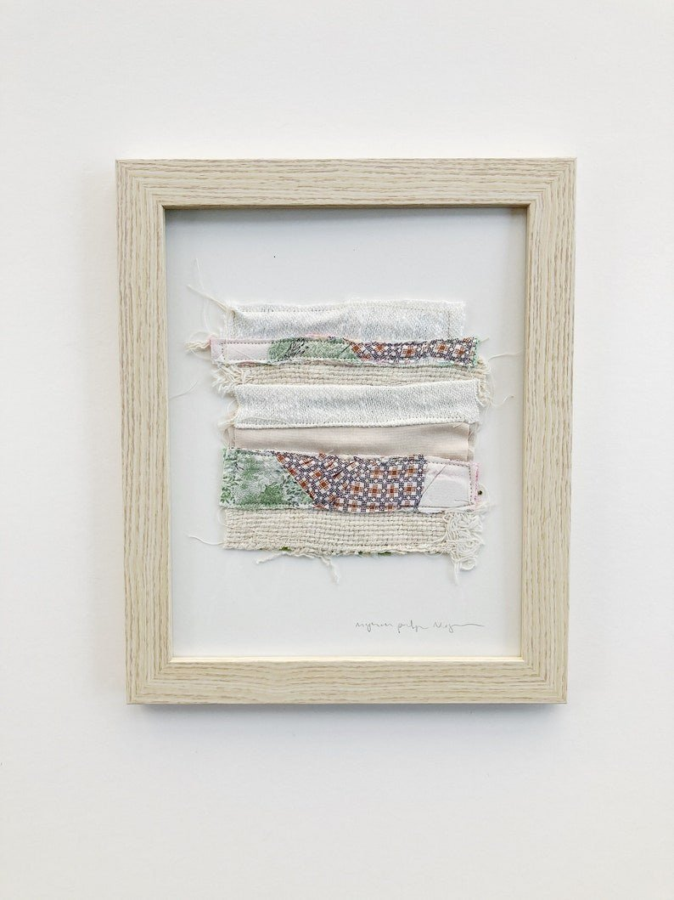
Beautiful fabric deserves framing just like a print: a quilt offcut, layered fabric strips, embroidery or a piece of a worn-out but loved textile becomes art under glass. Mount the fabric flat on card so it sits smoothly, and choose a frame deep enough that the glass does not crush any texture. Small textile frames group well with prints in a mixed gallery, adding the one thing paper cannot — texture. It is also a kind way to keep a piece of a baby blanket, a wedding dress offcut or a grandparent's quilt on show.
30. Neat Photo Grid Wall
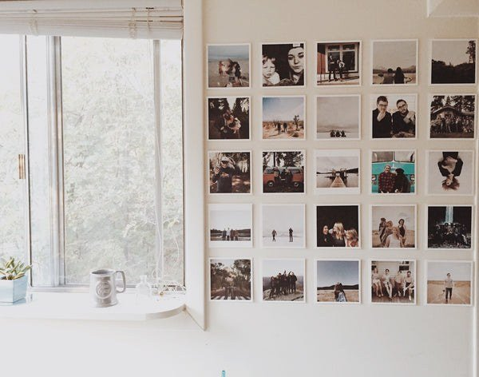
For a calmer take on the photo wall, print your pictures as squares and arrange them in a strict grid with even gaps. The orderliness is the decoration: measure the grid out with a level and painter's tape first, then fix each print with removable strips or small clips. Black-and-white prints make the grid feel most unified, while colour prints keep it playful and personal. It suits bedrooms and hallways, and it can grow row by row as you add new photos.
Conclusion
Good wall decor is rarely about buying more; it is about looking at what you already own — frames, fabric, plates, plants, photos and leftover paint — and giving it a place on the wall. Start with one idea from this list, live with it for a few days, and add a second only if the wall still asks for it. For more projects like these, explore the full DIY Wall Decor category, our Handmade Home Decorations for craft-based pieces, and Renter-Friendly Decor if your walls need to stay hole-free.